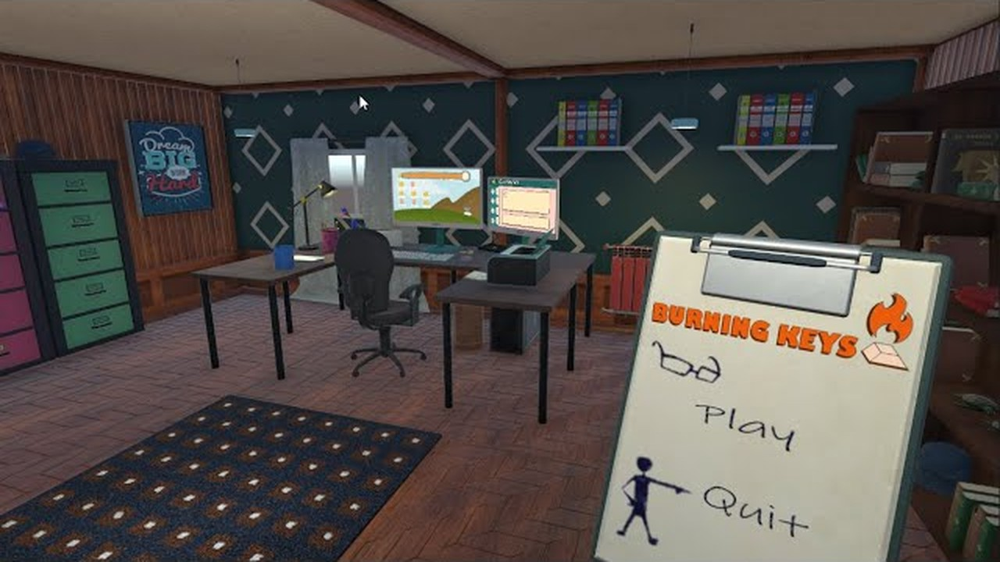
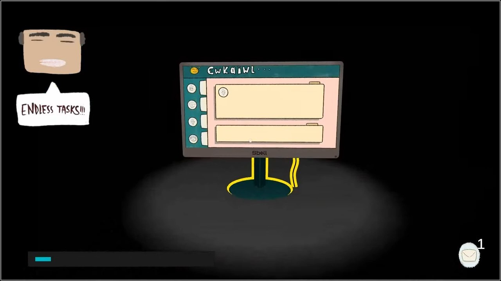
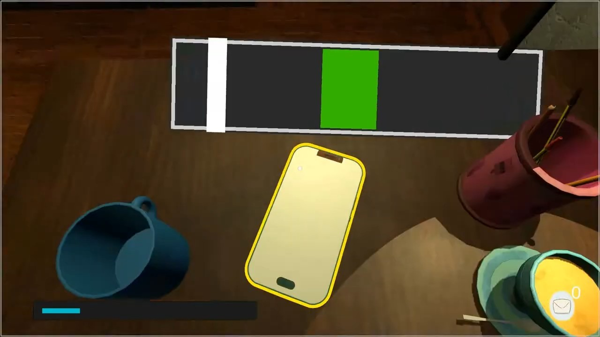
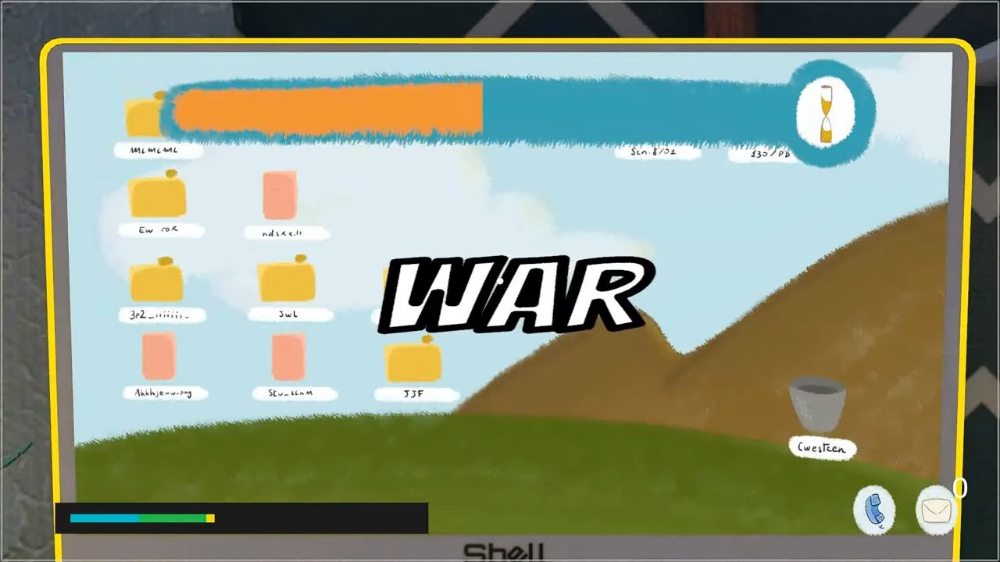
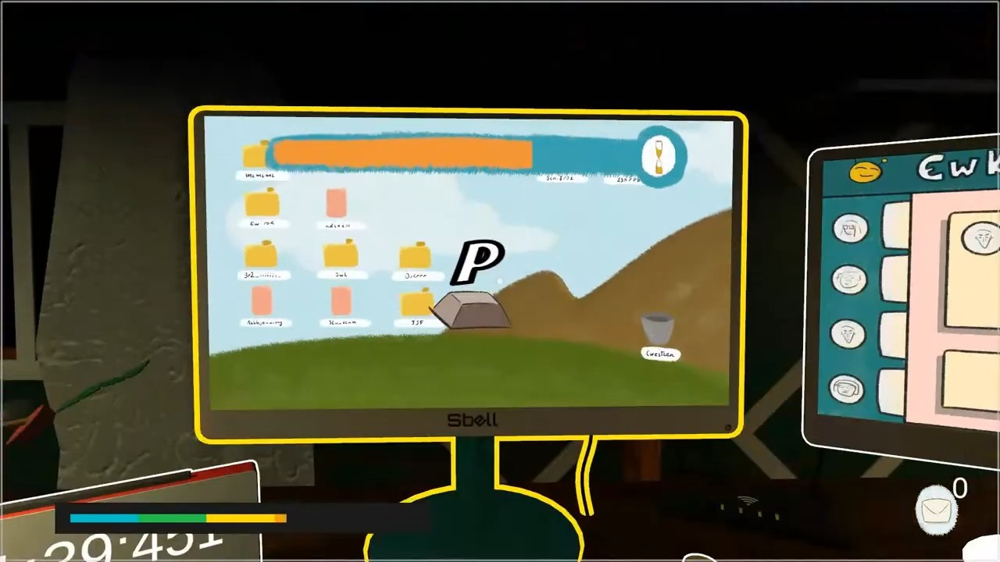
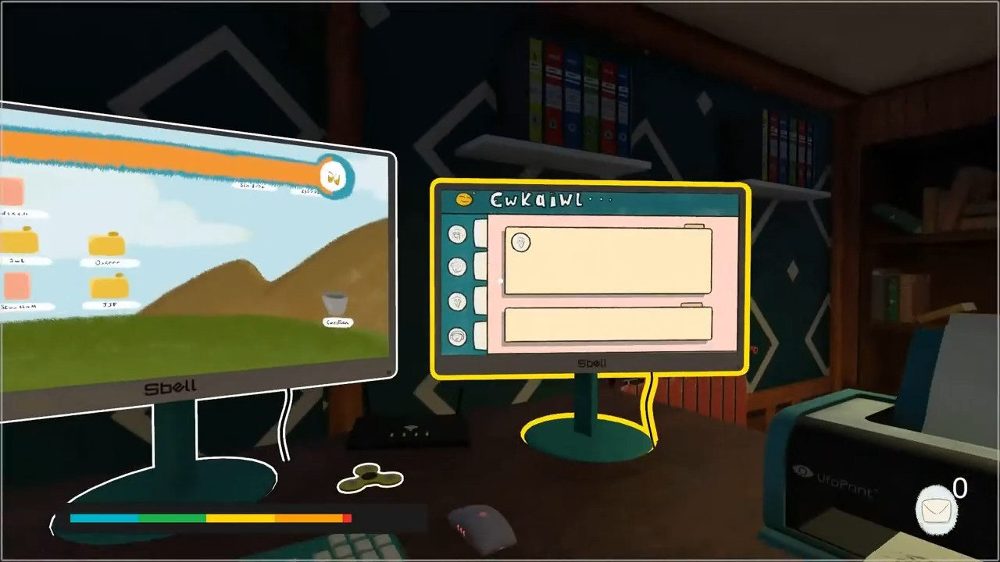

Global Game Jam 2022 — Tema: Duality
Burning Keys
/Introduzione_Al_Gioco
Alla scrivania, tra una sveglia che suona, mail da smaltire e un telefono che non smette, Burning Keys è il nostro ingresso alla Global Game Jam 2022 sul tema Duality. Prima persona in un ufficio stilizzato: completi task sul monitor, tieni sotto controllo la barra dello stress e, quando il fidget spinner entra in scena, il resto del mondo si ferma mentre cerchi un attimo di respiro.
Giorno e notte non sono solo atmosfera: il ciclo sole/luna accende e spegne la luce della lampada, e la camera si sposta dal punto di vista «seduto» al desktop, alla posta e al telefono — il gioco è fatto di piccoli dualismi tra calma e panico.
Il team era grande (code, design, art, audio). Io mi sono concentrato su flusso di scena e sensazione di spazio: menu start/win/lose, ciclo giorno-notte, gestione luci, camera con lerp tra i punti di interazione, integrazione UI e, dopo la jam, il blur URP sul minigioco dello spinner nella release 1.1.
Code: Antonio Troiano, Lorenzo Guerrini, Mauro Cirafisi, Michele Rossi — design, art e audio come nel README. Il task di scrittura sul monitor è di Lorenzo; telefono, stress, audio e tutorial sono soprattutto Michele e Mauro.
/Tecnologie_Usate
Unity 2021.2.7f1
Engine della jam. Scene condivise, prefab interattivi e build Windows pubblicata come v1.1.0.
C#
Manager di gioco a eventi, ciclo temporale, camera e integrazione dei task in prima persona.
URP
Illuminazione sole/luna, luci area sulla scrivania e Depth of Field sullo spinner (post-jam).
TextMesh Pro
UI di menu, fine partita e overlay sul monitor — tavoletta 3D nel menu start.
Animator
Transizioni del fidget verso la camera, rotazione e hook per blur e audio (team + fix post-jam).
/Comparto_Tecnico
Quello che segue è ciò che ho introdotto in jam (o subito dopo) e che è rimasto nel repo pubblico.
Dove Michele o Mauro hanno esteso il sistema — soprattutto GameManager, stress bar e spinner —
lo segnalo nelle didascalie.
Ciclo giorno / notte
DayTime.Invoke();
} else {
NightTime.Invoke();
}
// Day_NightCycle.cs — eventi statici usati da LightMgr e dall'illuminazione di scena.
Lampada da scrivania
Lamp_Light.intensity = 2;
AreaLight[1].intensity = 0.40f;
}
private void OnDayArrive() {
Lamp_Light.intensity = 0;
AreaLight[1].intensity = 0;
}
// LightMgr.cs — risposta alla dualità luce/buio sul punto di gioco principale.
Camera tra seduta, desktop, mail e telefono
moving = true;
while (Vector3.Distance(Camera.main.transform.position, position) > 0.01f) {
Camera.main.transform.position = Vector3.Lerp(...);
Camera.main.transform.rotation = Quaternion.Slerp(...);
yield return null;
}
moving = false;
}
// CameraMgr.cs — struttura e listener ai task; Michele ha ritoccato movimento e tutorial in jam.
Blur URP sullo spinner (post-jam)
StartCoroutine(BlurFadeIn());
}
private IEnumerator BlurFadeIn() {
myDheph.focalLength.value = Mathf.Lerp(0, blurAmount, i);
// … sincronizzato con l'animazione verso la camera
}
// Spinner.cs — commit «Pinner blur» / «Spinner Blur Fix» (feb 2022); logica spinner di base da Jumbax/Michele.
/Mie_Note_Sul_Progetto
La Global Game Jam 2022 è stata una delle prime volte in cui ho lavorato su un prototipo 3D con un team così articolato. Non avevo il compito del «minigioco wow»: serviva che la stanza respirasse e che passare da una task all'altra fosse leggibile in pochi secondi.
Ho messo su menu e scene di vittoria/sconfitta, il ciclo sole-luna con le luci che seguono, la camera che «si alza» dal punto di vista alla scrivania e il blur sullo spinner quando, un mese dopo la jam, abbiamo rifinito la build 1.1. Su GitHub il mio nome compare nel README ma non tra i contributor automatici: i commit sono firmati con la mail, senza account collegato — il lavoro c'è comunque nello storico.
— Antonio Troiano
/Screenshot
Frame dal trailer ufficiale.




